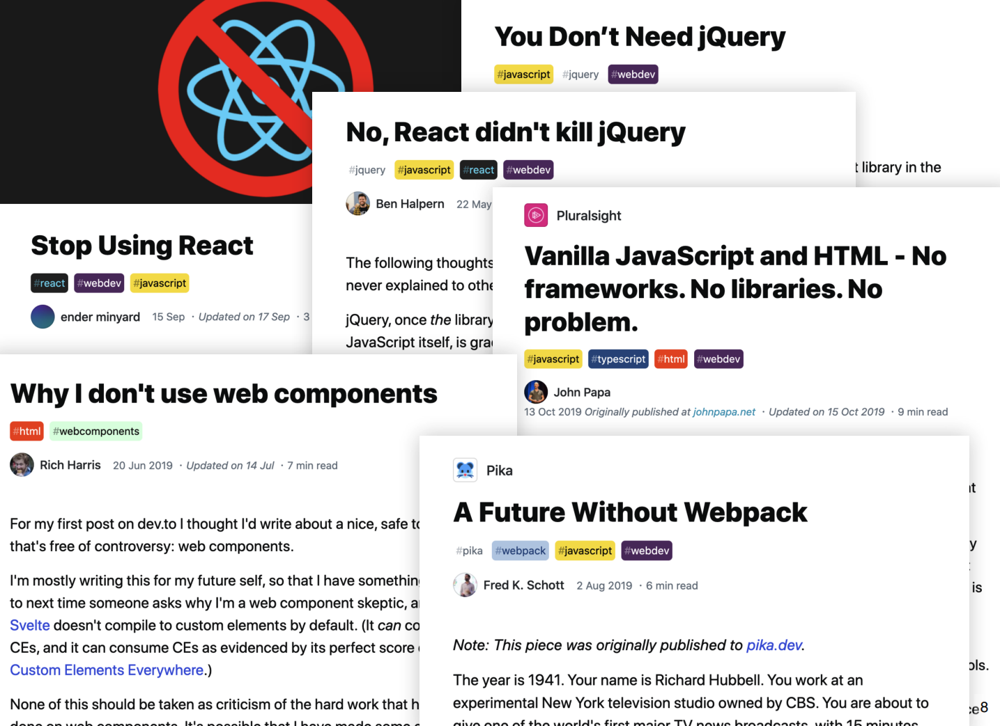
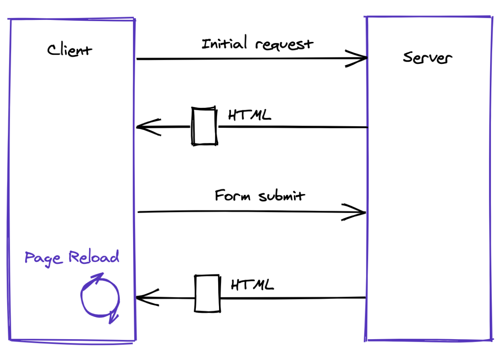
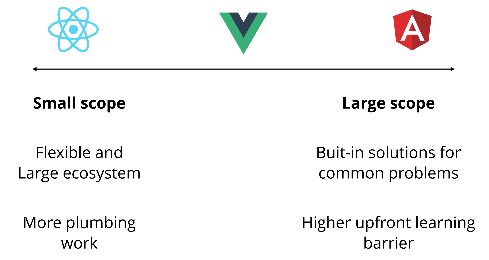
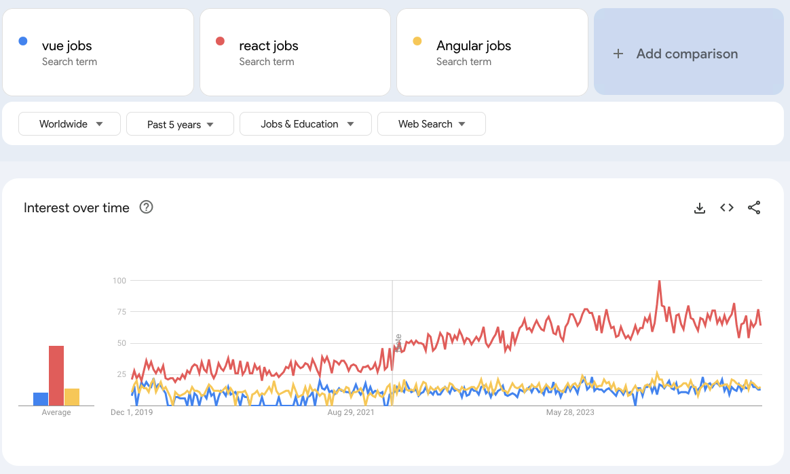

Web
Frontend Frameworks
Bertil Chapuis, Paul Nta
## <i class="fas fa-tasks"></i> Overview of Today's Class - Introduction to frontend Web frameworks - Imperative rendering with jQuery - Declarative rendering with React - How to choose a Web framework
Frontend Web Frameworks
## <i class="fas fa-code"></i> How does it feel to start a Web project? - You just found a new project idea and you want to start working on it! - You already know HTML, CSS and JavaScript, so you start coding... - But which framework should you use?

## <i class="fas fa-code"></i> How does it feel to start a Web project? React, Angular, Vue, Svelte, Ember, Aurelia, Polymer, Mithril, Riot, Backbone, Knockout, Meteor, Inferno, Preact, Cycle, Elm, Ractive, Solid, Hyperapp, SkateJS, Stencil, Riot, Marko, Svelte, Solid, jQuery, jQueryUI, jQueryMobile, Dojo, ExtJS, YUI, MooTools, Prototype, Scriptaculous, MochiKit, GWT, Closure, Knockout, Meteor, Inferno, Preact, Cycle, Elm, Ractive, Solid, Hyperapp, Skate, SkateJS, Stencil, Riot, Bootstrap, Foundation, Semantic UI, Materialize, Bulma, Pure, Skeleton, UIKit, Spectre, Milligram, Tachyons, Tailwind, Mini.css, etc.
## <i class="fas fa-code"></i> How does it feel to start a Web project? The list of frameworks is endless! - Which one should you use? - Which one is the best? - Which one is the most popular? - Which one is the most performant? - Which one is the most stable? - Which one is the most lightweight? - The list goes on and on... **The answers are often subjective and confusing! To understand the tooling of web development, you must first understand the problems they solve.**
## <i class="fas fa-code"></i> Do you need a framework? **No!** You can build a Web application without a framework. Vanilla JavaScript is a powerful tool and you can use it to build a web application. JavaScript is fast, lightweight, cross-platform and it is supported by all browsers.
## <i class="fas fa-code"></i> Traditional page lifecycle The HTML page is constructed on the server. Clicking on a link or submitting a form will reload the page. 
## <i class="fas fa-code"></i> Adding interactivity The page created by the server may look like this: ```html <body> <h1>Contacts</h1> <input type="text" placeholder="Filter" /> <p>9 items</p> <ul> <li>Paul</li> <li>Pauline</li> <li>Paulette</li> <li>...</li> <li>Miguel</li> <li>Milène</li> </ul> </body> ``` Let's add a bit of interactivity to this contact list: filter the contacts and update the number of items.
## <i class="fas fa-hand-paper"></i> Adding interactivity For this, we need to use Javascript to: - read information in the DOM (id, data attributes, etc...) - react to user input - update the DOM ```javascript const filterInput = document.getElementById("filter"); filterInput.addEventListener("input", (e) => { const filter = e.target.value; // filterList the list // then update the count }); ``` <!-- Give it a try on this [Code Sandbox](https://codesandbox.io/s/vanilla-list-q5dmsg?file=/index.html)! --> How does this logic scale if you add more features (e.g. button to add a new contact)?
## <i class="fas fa-code"></i> Adding interactivity Adding interactivity using plain Javascript is possible but... - **The complexity of the app can grow really fast** - **Functionality is split across the app** - **Architecture is hard to scale**
jQuery
## <i class="fas fa-code"></i> jQuery [jQuery](https://jquery.com/) (released in 2006) is a library that helps you manipulate the DOM. It is fast, small, and feature-rich, and was designed to make it easier for developers to build interactive web apps (select DOM elements, handling events, make AJAX requests, etc.) It is still the most widely deployed JavaScript library. Used by **63%** of the top 1 million websites in [2025](https://trends.builtwith.com/javascript/jQuery). React is at 20%. It also takes care of cross-browser compatibility to further simplify the development process.
## <i class="fas fa-code"></i> Imperative rendering with jQuery When Internet Explorer was the most popular browser, a lot of code was necessary to ensure that web apps worked on all browsers. Without jQuery (IE8+): ```javascript if (el.classList) { el.classList.add(className); } else { // classList unavailable on IE8 var current = el.className, found = false; var all = current.split(' '); for (var i=0; i < all.length, !found; i++) { found = all[i] === className; } if(!found) { if (current === '') el.className = className; else el.className += ' ' + className; } } ``` With jQuery: ```javascript $(el).addClass(className); ```
## <i class="fas fa-code"></i> jQuery vs Vanilla JavaScript What changed ? Since 2006, JavaScript and the Web APIs have improved ```javascript // With jQuery $(el).find(selector); $(el).addClass(className); $(el).on(eventName, eventHandler); // Without jQuery el.querySelectorAll(selector); el.classList.add(className); el.addEventListener(eventName, eventHandler); ``` jQuery is still used by a lot of developers but it is not necessary anymore. https://youmightnotneedjQuery.com/
## <i class="fas fa-code"></i> jQuery **You may not need to learn jQuery today** - Use Vanilla JS and the native browser API - Frameworks like React, Vue, or Angular take care of most of the DOM manipulation **It is totally OK if you still use it** - If your project still relies on it - If you feel productive with it - If you need to target old browsers
## <i class="fas fa-code"></i> Imperative vs Declarative jQuery promotes an **imperative approach** to rendering: developers must describe **how** to update the DOM. ```html <div id="content"></div> ``` ```javascript // "Go get #content, then set its HTML to 'Hello jQuery!'" $("#content").html("Hello jQuery!") ``` Modern frameworks (e.g. Angular, Vue, React, etc.) promote a **declarative approach**: developers describe **the app's data** and **what** the UI should look like, and the framework takes care of making it happen. ```html <!-- "There should be a div containing the value of a `message` variable." --> <div id="content">{{ message }}</div> ``` ```javascript // "The app should have a `message` variable with the value 'Hello Vue!', // and be responsible for updating the DOM of the #content element." const app = new Vue({ el: '#content', data: { message: 'Hello Vue!' } }) ``` The declarative approach effectively reduces the number of statements required to update the UI in large applications.
## <i class="fas fa-hand-paper"></i> Imperative vs Declarative With the notions we learnt so far, how could we implement a declarative approach?
React
## <i class="fas fa-code"></i> React https://reactjs.org A JavaScript library for building user interfaces. - When React was first introduced, it fundamentally changed how JavaScript frameworks worked - It allowed declarative rendering (describe the data and the UI, instead of telling the browser how to render and update the app) - It has custom renderers (e.g., React Native) for targeting other platforms.
## <i class="fas fa-hand-paper"></i> Declarative rendering with React A **Component** is a class or function, which accepts inputs (called props) and returns a React element describing what should appear on the screen. The **render** method returns a React element describing what should appear on the screen. The **setState** method schedules an update to a component’s state object. When the **state changes**, the component responds by re-rendering itself. ```javascript class App extends React.Component { state = { filter: "", contacts: [] }; onFilterChanged = (e) => { this.setState({ filter: e.target.value }); }; addContact = (name) => { this.setState({ contacts: [...this.state.contacts, name] }); }; render() { return (<div className="App">...</div>); } } ``` Give it a try on this [Code Sandbox](https://codesandbox.io/s/react-list-7fz040?file=/src/index.js)! Notes: It now is recommended to use functional components and hooks instead of class components, as we will see in the React Essentials lecture.
## <i class="fas fa-code"></i> Declarative vs Imperative (pseudo-code) With the **imperative** approach, you tell **what** you want to render and **how** it should be rendered ```javascript function onFilterChanged(filter) { const currentList = getCurrentList(); const newList = filterList(currentList, filter); updateList(newList); updateCounter(newList.length); if (isEmpty(newList)) { displayEmptyMessage(); } else { removeEmptyMessage(); } }; ``` With the **declarative** approach, you tell **what** you want to render. The logic (of when to display what) is managed by the framework. ```javascript function onFilterChanged(filter) { setState({ filter: e.target.value }) } //... logic in components ```
## <i class="fas fa-code"></i> React under the hood The render function is called every time the state changes, and returns a JSX element. ```javascript return ( <h1 className="greeting"> Hello, world! </h1> ); ``` The JSX element is converted to a React element. This is typically done via a transpiler like [Babel](https://babeljs.io/). ```javascript const element = React.createElement( 'h1', {className: 'greeting'}, 'Hello, world!' ); ``` The React element is then rendered to the DOM. ```javascript const root = ReactDOM.createRoot(document.getElementById('root')); root.render(element); ```
Choosing a framework
## <i class="fas fa-code"></i> Choosing a framework Project's constraints and requirements should be the main criteria to choose a framework. - Functional requirements of the project - Non-functional requirements of the project - Compatibility with browsers and devices - Size of the team - Experience of the developers - Size of the project - etc. Notes: Examples of non functional requirements: performance, security, maintainability, scalability, etc.
## <i class="fas fa-code"></i> Common use cases - Rendering components - Managing state - Handling events - Managing side effects - Routing - Data fetching - Form handling and validation - Advanced animations, transitions, and effects - etc.


## <i class="fas fa-code"></i> Fancy new frameworks? What about the new fancy frameworks? - [Svelte](https://svelte.dev/) - [Fresh](https://fresh.deno.dev/) - [Solid](https://www.solidjs.com/) - [Preact](https://preactjs.com/) - etc. Except if you have a very specific need, it's probably better to stick with the most popular frameworks. Learn to be old fashion cool!